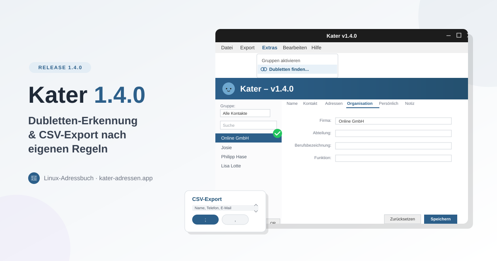

Kater 1.4.0 – Ordnung ins Adressbuch bringen
28. September 2026
Wer über Jahre Kontakte importiert, aus Thunderbird übernimmt oder mehrfach von Hand einträgt, kennt das Problem: Irgendwann steht „Anna Müller" dreimal im Adressbuch – einmal mit Handynummer, einmal mit E-Mail, einmal mit beidem. Kater 1.4.0 räumt auf.
Dubletten-Erkennung
Neu unter Extras → Dubletten finden...: Kater durchsucht das Adressbuch nach Kontakten mit gleichem Namen, gleicher E-Mail-Adresse oder gleicher Telefonnummer.
Gefundene Dubletten landen in einem Seite-an-Seite-Vergleich. Dort entscheidest du Feld für Feld, welche Version bleibt – abweichende Werte wählst du einzeln aus. Telefonnummern, E-Mail-Adressen und Adressen werden beim Zusammenführen automatisch dedupliziert statt einfach überschrieben, und die Gruppenzugehörigkeit bleibt erhalten.
CSV-Export nach eigenen Regeln
Der CSV-Export war bisher fest vorgegeben. Jetzt bestimmst du selbst:
- Welche Felder exportiert werden
- In welcher Reihenfolge die Spalten stehen – per ↑/↓ sortierbar
- Welches Trennzeichen verwendet wird – Semikolon oder Komma, je nachdem was die Zielanwendung erwartet
Aufgeräumtes Menü
Die Exportfunktionen waren über mehrere Menüs verstreut. Jetzt gibt es einen zentralen Menüpunkt Export, der vCard-, CSV-, Fritzbox- und Speedport-Export bündelt. Die Importfunktionen findest du gesammelt unter Datei → Import.
Download & Installation
Alles Wissenswerte – Download, Screenshots, Features – findest du auf der offiziellen Kater-Webseite kater-adressen.app.
Wie gewohnt als AppImage – herunterladen, ausführbar machen, fertig.
Für eine saubere Desktop-Integration (Starter, Menüeintrag) gibt es zusätzlich ein
install.sh-Script:
chmod +x install.sh
./install.sh Kater-x86_64.AppImage
Startet Kater nicht? ./install.sh --repair behebt fehlende Abhängigkeiten.
Arch Linux / CachyOS: Kater ist im AUR verfügbar:
yay -S kater-bin
Alles auf der Kater-Projektseite.
Open Source
Kater ist unter der GPLv3 lizenziert – Code offen auf GitHub.
Mehr Infos: Webseite | Projektseite | GitHub